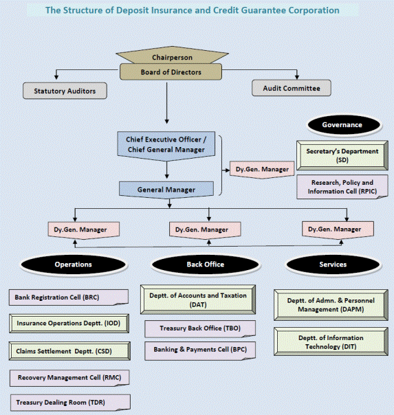

AECO241 :: Lecture 08 :: HIGHER FINANCING INSTITUTIONS

RESERVE BANK OF INDIA
The Reserve Bank of India (RBI) war established in April 1, 1935, in accordance with the provisions of the RBI Act, 1934. The Agricultural Credit Department (ACD) was organized 1935 to co-ordinate the Bank's operations with State Co-operative Banks and other banks and organization dealing with agricultural credit., Financing agriculture by commercial banks is looked after by the Department of Banking Operations and Development (DBOD) while ACD continued to take care of co-operative credit may be viewed from three aspects:
a) Provision of finance.
b) Promotional Activities, and
c) Regulatory functions.
a) Provision of Finance
RBI extends short, medium and long-term credits to agriculture through co-operative channels. The bulk of the credit granted by the RBI related to short-term to meet Seasonal Agricultural Operations (SAO). The RBI Act was amended in 1955 to provide for the establishment of two funds, viz., National Agricultural credit (Long Term Operations) Fund and National Agricultural Credit (Stabilization) Fund. The three components of medium-term credit are: a) loans for purchasing shares in co-operative processing societies, b) loans for agricultural and other allied purposes, including animal husbandry and pisciculture and c) conversion of short-term agricultural loans into medium term loans when repayment becomes difficult due to natural calamities. While ' the first two ((a) and (b)) are financed out of the NAC (LTO) fund and the (c) (Last one) is out of NAC (stabilization) fund.
The RBI provides long-term credit as loans to the state governments for contribution to the share capital of the co-operative credit institutions and to NABARD. The RRBs get refinance facility from the RBI up to 50 per cent of their out standing advances.
b) Promotional Activities
Under rehabilitation programme, most of the cooperative banks have attained viable status. The Study Teams appointed by the RBI have given constructive suggestions to reorganize the co-operative structure on sound lines. The following need special mention: the Committee on Co-operative Land Development Banks (1974), the Committee on Integration of Co-Operative Credit Institutions (1976) committee to study the Interest Rates Spreads in Agricultural Lending Sector etc.
RBI introduced production-oriented credit by means of crop loan system. It has evolved norms to extend medium term finance. It has been issuing appropriate guidelines to Land Development Banks for purposeful and productive utilization of resources. The benefit of deposit insurance cover has been extended to the co-operative banks operative banks so as to facilitate mobilization of deposits.
The RBI evolved a scheme to finance the weak PACS by commercial banks. It initiated the Lead Bank Scheme in 1969 and its impact is seen in branch expansion and other activities of the commercial banks. It advised the banks to participate effectively in the Integrated Rural Development Programme and extend loans to the weaker sections.
c) Regulatory Functions
As a lender, the RBI not only concerned itself with the quantity of credit but also attempted to improve the quality of credit extended and also the efficiency of the channels through which it is provided to the rural sector. The cooperative banks were brought under certain provisions of the Banking Regulation Act and of the RBI Act in 1966. This enabled the RBI to effectively supervise the co-operative banks as it does over the commercial banks. Under the Credit Authorization Scheme (1976), the co-operative banks should get prior authorization from RBI for providing finance beyond a limit. The RBI frames the overall credit policy on the basis of the credit needs of agriculture. Limits to credit institutions are fixed by taking into account the demand for credit and not just arbitrarily.
The cash / liquidity ratios applicable to co-operatives are lower than those fixed for commercial banks. The co-operatives are enabled to borrow from the RBI at an interest rate which is three per cent below the bank rate in respect of crop loans. They are also permitted to pay slightly higher rates of interest on their deposits. The refinancing functions of RBI relation to rural credit were function of RBI relation to rural credit was taken over by NABARD after its formation in 1982.
NATIONAL BANK FOR AGRICULTURE AND RURAL DEVELOPMENT (NABARD)
On the basis of the views expressed by the All India Rural credit Review Committee (1969), the Administrative Reforms Commission (1970) , the banking Commission (1972), and the National Commission on agriculture (1976), the Committee to Review the Arrangements for Institutional credit for Agriculture and Rural Development (CRAFICARD) appointed by the RBI under the chairmanship of B. Sivaraman in 1979 considered the desirability and the feasibility of establishing a national bank for rural development in the context of integrated rural development. While examining the activities of the ARDC and the RBI in the delivery of rural credit against massive credit needs for rural development over the coming years, the CRAFICARD felt that the present national level institutions had certain deficiencies affecting their capacity to meet the stupendous task of integrated rural development aimed at the uplift of the weaker sections in the rural areas within a given time horizon.
The CRAFICARD considered that the ARDCIL was unable to ensure the necessary supporting short-term credit and also the ARDC could not support non-land based activities which are also to be promoted in the context of implementation of IRDP. The committee considered whether the top management of the RBI in the midst of its multifarious functions could devote sufficient attention to the complex credit problems involved in the integrated rural development. The committee also felt that the Agricultural Credit Board (ACB) which was established in 1970 in the place of the then Standing Advisory Committee on Rural Co-operative Credit could not solve the complex issues of rural credit by holding a few meetings in a year. For all these reasons, the committee recommended for the establishment of NABARD and hence it was started, functioning since 12th July 1982.
As such it has replaced by merging in itself, the ARDC and the two credit related constituents of the RBI, namely, Agricultural Credit Department and the Rural Planning and Credit Cell (RPCC) (The RRBs which were initially, dealt with by DBOD, was placed under the charge of the RPCC in 1979). Thus, NABARD is conceived as an exercise of decentralization of the RBIs functions relating rural credit and that it would take over the ARDC and the refinancing functions of RBI in relation to State Co-operative Banks and RRBs.
Resources
The share capital of NABARD is Rs. 100 crores and is held by the RBI and GOI in equal proportion. The NABARD draws funds from the RBI for its short-term operations, and for long-term operations, it draws funds from the Government of India, floats bonds in the open market and also draws from its National Agricultural Credit (Long Term operations) Fund and National Agricultural Credit (Stabilization) Fund. The NABARD is also authorized to accept deposits with maturity period of not less than twelve months from the central and state Governments, local authorities, scheduled banks etc. and also to borrow foreign currency with the approval of central government.
Management
The management of NABARD is vested with a 15 member Board of Management which consists of a Chairman, a Managing Director and 13 Executive Directors. The chairman is the ex-officio Deputy Governor of RBI. The Managing Director is the Chief Executive of the Bank with operational responsibility for the performance of various tasks. The Executive Director will be in charge of each of the major functional divisions i.e., two Directors from central government, three sitting Directors from co-operatives and commercial Banks and two experts on rural economy and rural development. The Board of Directors can constitute an Advisory Council.
The two Directors from state Governments will be appointed by rotation to give representation to five Zones, viz., Northern, Southern, Eastern, Western and North-Eastern. NABARD will be, thus, broadly divided into five zones with its head quarters at Bombay Mumbai and 16 regional offices located in i) Jammu, ii) Chandigarh, iii) Lucknow, iv) Patna, v) Gauhati, vi) KoCalkacutta, vii) Bhubaneshwar, viii) Hydrabad, ix) Bangalore, x) Madras (Chennai), xi) Trivandram, xii) Mumbai (Bombay), xiii) Iindore, xiv) Ahamadabad, xv) New Delhi and xvi) Jaipur.
"National Bank for Agriculture and Rural Development is established as a Development Bank for providing and regulating credit and other facilities for the promotion and development of agriculture, small industries, cottage and village industries, handicrafts and other rural crafts and other allied economic activities in rural areas with a view to promoting integrated rural development and securing prosperity of rural areas and for matters connected therewith or incidental thereto".
1. Mission
Promoting sustainable and equitable agriculture and rural prosperity through effective credit support, related services, institution development and other
innovative initiatives.
2. Types of Services
In order to achieve this mission, NABARD undertakes a number of inter-related activities / services which fall under three broad categories viz., credit dispensation, developmental and promotional and supervisory.
A. Credit Dispensation
- Prepares for each district annually a potential linked credit plan which forms the basis for district credit plans
- Participates in finalization of Annual Action Plan at block, district and state levels
- Monitors implementation of credit plans at above levels.
- Provides guidance in evolving the credit discipline to be followed by the credit institutions in financing production, marketing and investment activities of rural farm and non farm sectors
- Provides refinance facilities to the institution as under
Types of Refinance Facilities
Agency |
Credit Facilities |
Commercial Banks |
Long Term credit for investment purposes, financing the working capital requirements of Weavers' Cooperative Societies (WCS) and State Handloom/Handicraft Development Corporations |
Short Term Cooperative structure (State Cooperative Banks, District Central Cooperative Banks, Primary Agricultural Credit Societies) |
Short Term (crop and other loans), medium term (conversion) loans, term loans for investment purposes, financing weavers' cooperatives - State Handloom Development Corporations for working capital by State Cooperative Banks |
Long Term Cooperative structure (State Cooperative Agriculture and Rural Development Banks, Primary Cooperative Agriculture and Rural Development Banks) |
Term loans for investment purposes |
Regional Rural Banks (RRBs) |
Short Term (crop and other loans) and term loans for investment purposes |
Urban Cooperative Banks (Scheduled) |
Long term investment activities both in farm and non-farm sectors in rural areas. |
State Governments |
Long Term loans for equity participation in Co-operatives, Rural Infrastructure Development Fund (RIDF) loans for rural infrastructure projects |
Non-Governmental Organizations (NGOs) - Informal Credit Delivery System |
Revolving Fund Assistance for Micro Credit Delivery Innovations and Promotional Projects |
B. Developmental & Promotional
The developmental role of NABARD can be broadly classified as:-
Nurturing and strengthening of - the Rural Financial Institutions (RFIs) like SCBs/SCARDBs, CCBs, RRBs etc. by various institutional strengthening initiatives.
- Fostering the growth of the SHG Bank linkage programme and extending
- essential support to SHPIs NGOs/VAs/ Development Agencies and client banks.
- Development and promotional initiatives in farm and non-farm sector.
- Extending assistance for Research and Development. Acting as a catalyst for Agriculture and rural development in rural areas.
C. Supervisory Activities
As the Apex Development Bank, NABARD shares with the Central Bank of the country (Reserve Bank of India) some of the supervisory functions in respect of Cooperative Banks and RRBs.
Special Focus
- Removal of regional / sectoral imbalances
- Poverty Alleviation and Employment Generation
- Development of rural micro-enterprises
- Strengthening Rural Financial Institutions (RFIs)
- Encouraging prudential financial standards in RFIs
- Encouraging capital formation in agriculture
- Promotion of micro-finance/ development
- Rural Infrastructure Development
- Hi-tech and export oriented projects
- Creating policy environment for flow of rural credit
- Experimenting with new models, products and innovative practices in rural credit
- Thrust on rural awareness and financial services
3. Customers of the Bank
The customers of NABARD are Cooperative Banks, State Land development Bank, Scheduled Commercial Banks, Urban Cooperative Banks and such financial institutions as may be approved by RBI. Further, NABARD also deals with voluntary agencies/NGOs besides various State Governments. While discharging various credit functions, NABARD has no direct business dealings with public at large, although all the functions are directed at securing and promoting integrated rural development and prosperity of rural areas. The interaction between NABARD staff and the ultimate borrowers i.e., farmers, artisans, craftsmen and entrepreneurs, takes place while conducting a number of field level studies, fostering the growth of the SHG bank linkage, developing Vikas Volunteer Vahini (VVV) and sanctioning/monitoring the various promotional schemes under NFS/FS. NABARD has recently introduced the Capital Gains Bonds and these bonds are subscribed by publics
4. Quality of Service
4.1 NABARD has a complement of suitably qualified and experienced staff in the following areas:
- General Banking
- Agriculture and related services such as Irrigation, Plantation and Horticulture, Land Development, Agriculture Engineering, Bio-technology, Fisheries, Forestry, etc.
- Agriculture Economics
- Information Technology
The staff provide need-based services to its client banks, state governments, SHGs / NGOs which ultimately serve the interest of agriculture and rural development. NABARD through its District Development Managers and Regional Offices deals with client banks, State Governments and voluntary agencies. It has been the endeavour of NABARD to provide various credit and financial services to the RFIs timely and efficiently. The above customers of NABARD, in turn, have public at large, as their customers. Thus, indirectly NABARD is responsible for giving timely services to these clients to enable them to act timely with their customers i.e., general public at large.
4.2 To improve the quality of service as well as keeping in tune with the emerging developments in Information Technology, NABARD has launched an Action Plan on information technology and its implementation has been vigorously pursued. Networking environment has been introduced in NABARD phasing out the earlier mini computer systems. Advanced version and custom-made software packages have been introduced for computerizing additional functional areas. Flow of information and data between RO and HO as also between departments of HO through electronic media is being progressively adopted facilitating faster promotion of information and data, e-mail and related facilities. Upgrading the skills and imparting knowledge is the theme of our training efforts for staff so as to improve productivity, make the Organization efficient and emerge as a learning organization.
5. Performance Standards
NABARD has always maintained high standards of performance and made efforts to bring about similar performance standards for its client banks/institutions. To supervise its operations and performance, NABARD has its own internal Inspection Department which periodically undertakes inspection of its all HO Departments and ROs. A system of concurrent audit of the financial transactions is also in place. The Bank is also audited by the statutory auditors appointed by GOI and inspected by RBI every year. Innovation and creativity are encouraged through participative management practices and a Staff Suggestion Scheme is in place to share their ideas for better products and customer satisfaction.
6. Grievance Redressal
NABARD has its own internal redressal machinery viz. Central Vigilance Cell which has been established as per the directions of Central Vigilance Commission of GOI. It has appointed Chief Vigilance Officer at HO and Vigilance officer at ROs. The internal systems and Procedures are well laid down and under constant scrutiny of Concurrent Audit and Vigilance Cell. A strong Internal Audit and Inspection mechanism is in place besides the Statutory Audit by Professional Auditors and inspection by RBI. A notice board is kept for public at large in all NABARD office premises indicating the names of Chief Vigilance Officer/Vigilance officer to be contacted by the public in case of need. As far as client banks (SCBs, SCARDBs, RRBs, CCB and commercial banks) are concerned, the complaints against their staff when made to NABARD are attended effectively and it is ensured at various levels that no complaint is left unattended.
7. Access to information
NABARD has its own website and its address is www.nabard.org. The website highlights all major areas of its functioning and broadly indicates all matters relating to organization, role and functions, operations, rural economy, international associates, addresses of its offices, etc. The general public at large may, if required on matters relating to credit for agriculture and rural development approach HO, ROs or DDMs of NABARD whose addresses are given in the above website. The National Bank Home Page is updated periodically to provide latest information on the policy changes, operations, etc. Apart from the website NABARD has its own Public Relation Officer to disseminate any information relating to the Organization, agriculture and rural development and related policies adopted by the Organization. The information relating to agriculture, rural development, banking, etc. are also published by NABARD through its various publications such as books, periodicals, booklets, etc. in both Hindi and English and some periodicals even in local languages. The Annual Report of NABARD including its Balance Sheet/Profit and Loss Accounts is published / circulated giving necessary details/disclosures about its performance.
8. Important Initiatives by NABARD
8.1 Institutional Strengthening Initiatives
- Preparing Institution Specific Development Action Plans (DAPs) and entering into MoUs with Cooperative Banks and RRBs
- Facilitating State-specific reform packages for Cooperative Banks
- ODI Intervention and Training and capacity building in RFIs
- Support for improvement of business, system, HRD, etc. of cooperatives
- Social Re-engineering through Vikas Volunteer Vahini (VVV)
- Institution of Awards for good performing Cooperative Banks
- Assistance for Business Development Cells (BDC) in Co-operative and RRBs
8.2 micro Finance Innovations and Strategies
- Grant support to Self Help Promoting Institutions (SHPIs) to improve access to credit for rural poor
- Capacity Building of partner institutions in micro Finance
- Supporting and up scaling of SHG-bank linkage programme
8.3 Development Initiatives
- Introduction and popularization of Kisan Credit Card Scheme
- Support for watershed development programmes from Watershed Development Fund
- Supporting & promoting Dry land farming practices
- Promoting investment in NFS including rural housing, communication and service sector
- Credit intensification through area programmes like DRIP and Cluster Development
- Strengthening rural Haat / marketing pursuits
- Support for REDPs - Institutionalization
- Support for women entrepreneurs and addressing gender issues in credit
- Assistance for environmental awareness/protection
- Support for Agri business, Agri-clinic and extension activities
8.4 Research and Development Initiatives
- Support to Research activities in areas of agriculture and rural development
- Support for seminars, conferences and workshops
- Conducting institution/area/sector/project-specific studies
- Dissemination of findings of studies and research and innovative models and practices
8.5 Supervision
- On-site inspection and off-site surveillance of RFIs
- Issue of warning signals to banks showing deterioration in financial position and adverse features
- Taking preventive and revival measures for weak banks
8.6 Institution of purpose-specific funds in NABARD
- Watershed Development Funds (WDF)
- Co-operative Development Funds (CDF)
- Rural Promotion Corpus Fund (RPCF)
- Credit and Financial Services Fund (CFSF)
- Micro-Finance Development Fund
- Soft Loan Assistance for Margin Money Fund
- National Rural Credit Operation Fund
- National Rural Credit Stabilization Fund
- Agriculture and Rural Enterprises Incubation Fund
Functions of NABARD
i) Provision of Finance: NABARD provides different types of refinance to the following eligible institutions:
a) Short term credit: The Eligible Institutions are : State Co-operative Banks, Regional Rural Banks and other financial institutions approved by RBI.
Purposes
- Seasonal Agricultural Operations and marketing of crops
- Marketing and distribution of inputs like fertilizers, pesticides, etc.,
- Production and marketing activities of artisans, small-scale industries, village and cottage industries,
- Any other activity connected with agricultural / rural sector.
Period: Up to 18 months
b). Medium term credit: The Eligible institutions are: State cooperative banks, State Land Development Banks, Regional Rural Banks and other financial institutions approved by RBI.
Purposes: Any investment connected with agriculture and rural sector requiring MT credit assistance.
Period: Between 18 months and 7 years
c) Long term credit: The eligible Institutions are: State Cooperative Banks (SCB), State Land Development Banks, Regional Rural Banks, Commercial Banks and other financial institutions approved by RBI.
Purposes:
- Refinance for investment in agriculture and allied activities such as minor irrigation, land development, soil conservation, dairy, sheep, poultry, piggery, farm mechanization, plantation/horticulture, forestry, fishery, storage and market yards etc.
- Refinances loans meant for artisans, small-scale industries, village and cottage industries and others (non-farm sector)
- Loans to state government for contributing share capital to co-operative institutions.
Period: Available upto to a maximum of 25 years.
- Co-ordinates operations of rural credit institutions.
- Assists governments, RBI and other institutions in rural development efforts.
- Contributes to the share capital and securities of eligible institutions concerned with agriculture and rural development.
- Assists state government to enable them to contribute to the share capital of eligible institutions.
- Frames overall rural credit policies
- Provides facilities for training, research and dissemination of information in the fields of rural banking, agriculture and rural development.
- Undertakes the inspection of RRBs and co-operative credit institutions.
Schematic Lending
Purpose-wise and Agency-wise Amount Sanctioned and Disbursed during 2007-2008 and Cumulative Disbursements up to 31 March 2008
(Amount in Rs.Lakhs)
Purpose |
Financial Assistance |
NABARD’s Commitment |
Disbursement during 2007-2008 |
Cumulative Disbursement as on 31 March 2008 |
Minor Irrigation |
42493 |
40368 |
40368 |
1549045 (14.4) |
Land Development |
46213 |
46214 |
46214 |
335050 (3.1) |
Farm Mechanization |
193619 |
174765 |
174765 |
2173914 (20.2) |
Plantation / Horticulture |
37981 |
34182 |
34182 |
428112 (4.0) |
Poultry and Sheep / Goat / Piggery |
16120 |
14510 |
14510 |
317028 (3.0) |
Fisheries |
2828 |
2545 |
2545 |
89649 (0.8) |
Dairy Development |
67319 |
60587 |
60587 |
848727 (7.9) |
Storage / Godowns & Market Yards |
15142 |
13628 |
13628 |
108084 (1.0) |
Forestry |
709 |
639 |
639 |
33156 (0.3) |
Bio Gas Plants |
108 |
98 |
98 |
15238 (0.1) |
Non-farm Sector |
297405 |
274795 |
274795 |
2135135(19.8) |
Seed Project * |
- |
- |
- |
3282 (Neg) |
Self Help Group |
161548 |
161550 |
161550 |
706199 (6.6) |
SC/ST Action Plan* |
2052 |
2052 |
2052 |
103798(1.0) |
SGSY |
28732 |
25858 |
25858 |
1230492(11.4) |
Others |
49851 |
45314 |
45314 |
610566(5.7) |
AH (OTHERS) |
7910 |
7119 |
7119 |
74591(0.7) |
Agri-clinics and Agribusiness |
403 |
403 |
403 |
947(Neg) |
All Purposes |
970434 |
904627 |
904627 |
10763013 (100.0) |
Neg. – Negligible.
Source: Statistical Statements, Annual Report - 2007-2008, National Bank for Agriculture and Rural Development, Mumbai.
With a view to improve the quality of credit plans, and also to organize, co-ordinate and effectively monitor them, NABARD will be setting District Level Offices in all the districts in the country inn a phased manner in the (VIII) plan. In the first phase, the NABARD has already set up 43 such offices. These offices would also prepare a potential linked credit plan for each district which would serve as a basis for the preparation of Annual credit plans by the branches of commercial banks.
In future, NABARD will give special attention to the development of dry land farming, and increasing the production of oil seeds and pulses which are in short supply. It will bring about nexus between producers and input suppliers, marketing agencies and extension services to ensure remunerative employment for the rural artisans.
AGRICULTURAL FINANCE CORPORATION
Agricultural Finance Corporation Ltd was incorporated on April 10, 1968 as a Public Limited Company with an Authorised Capital of Rs. 100 crore and Paid-up Capital of Rs. 5 crore by the then private sector commercial banks to “finance agriculture by all possible means”.(Currently the Paid-up Capital is Rs. 15 crore). Subsequent to the nationalisation of fourteen major Indian Scheduled Commercial Banks on July 19, 1969, AFCL repositioned itself as a Technical Support Institution for facilitating accelerated growth of Indian agriculture. AFCL has now blossomed into a diversified reputed consultancy organization (http://www.afcindia.org.in/service.php).
Agricultural Finance Corporation Limited (AFCL) which is owned by public sector banks, NABARD and Exim Bank, is a forty year old consultancy organisation mainly involved in providing consultancy services in the field of agriculture, allied and also social sectors. AFCL has good rapport with the various Ministries/Departments in the Government of India, and State Governments, and now is a well known name in the field of consultancy.
Agricultural Finance Corporation Limited (AFCL) is governed by eminent Board of Directors comprising Chairmen and Managing Directors of eight Public Sector commercial Banks; Chairman of Development Finance Institutions i.e. National Bank for Agriculture and Rural Development, (NABARD) and Export & Import Bank of India (EXIM Bank) nominees of Government of India from the Ministries of Agriculture, Finance and Planning Commission; and three Experts in the fields of Agriculture, Finance and rural development. One of the three experts is currently the Chairman of the Board of Directors of the company. The Managing Director is the chief executive of the Company. Headquarter of AFCL is situated at Mumbai. The Company has three Regional Offices at Kolkata, New Delhi and Bangalore besides four Branch Offices at Guwahati, Lucknow, Dehradun and Hyderabad and Project Offices at Kalahandi, Sohela, Pilibhit, Bhor (Pune) and Nasik.
AFCL offers consultancy services in Agribusiness Management, Livelihood Development and Poverty Alleviation, Water Resources Management, Watershed development and Management , Rural Credit, Agriculture, Micro Enterprises and Micro-Finance, Area Development, Capacity Building, Fishery, Forestry, Gender Development, Horticulture & Plantation, Wasteland Development, Non-farm sector, Project Implementation, Non-conventional Energy, Environment Impact Assessment & Environment Management Plans & Resettlement & Rehabilitation, CDM Services.
Vision: To facilitate increased flow of institutional credit and other support services for rural prosperity.
Mission: To continue to be the leading agri consulting organisation by providing timely, appropriate and feasible client-specific end-to-end solutions not only in India but in other developing countries.
In its four decades of its existence, AFCL has been involved in more than 5000 consulting assignments in India and also in other countries. AFCL’s services has been utilised by various Ministries and Institutions of the Central and State Governments and Multi-lateral funding institutions like World Bank, Asian Development Bank, International Fund for Agricultural Development, UNDP/UNOPS, DFID, Islamic Bank.
The major services include consultancy, capacity building, micro finance and project implementation.
Consulting services cover the entire gamut of agriculture and rural development including the various sectors and sub-sectors. The services can be classified into the following:
- Project Appraisal
- Project Identification
- Project Formulation
- Preparation of Detailed Project Reports
- Techno-Economic Feasibility Studies
- Surveys – Base-line, benchmark, socio-economic, customer satisfaction etc.
- Monitoring and Evaluation Studies – Mid-term, end-line, longitudinal
- Impact Assessment Studies
Since inception in 1968, AFC has successfully handled over 5000 assignments of diverse nature for a variety of clients in India and other countries including multilateral funding institutions. These could be broadly grouped under the following categories:
- DPRs for Multi-Lateral Agencies
- Support Services for MFO’s and MFI’s
- Agriculture
- Agribusiness
- Agricultural Marketing
- Animal Husbandry
- Area Development
- Bio-technology
- Capacity Building
- Institutional
- Human
- CDM Services
- Commercial & High-Tech Agriculture
- Environment/Ecology
- Conservation and Development
- Impact Assessment and Management
- Others
- Fishery
- Forestry
- Gender Development
- Horticulture & Plantation
- Livelihood Development & Poverty Alleviation
- Micro Enterprises and Micro-Finance
- Non-conventional Energy
- Non-farm sector
- Project Implementation
- Rehabilitation and Resettlement
- Rural Infrastructure
- Rural Credit
- Commercial Banks
- Development Finance Institutions
- Cooperatives
- Others
- Sericulture
- Water Resources
- Irrigation
- Command Area Development
- Ground Water
- Watershed Development
- Catchment Area Treatment
- Others
- Wasteland Development
ASIAN DEVELOPMENT BANK
ADB was conceived amid the postwar rehabilitation and reconstruction of the early 1960s. The vision was of a financial institution that would be Asian in character and foster economic growth and cooperation in the region - then one of the poorest in the world. The Philippines capital of Manila was chosen to host the new institution - the Asian Development Bank - which opened its doors on 19 December 1966, with 31 members to serve a predominantly agricultural region. Through the years, ADB's work and assistance levels has expanded alongside its membership as the region has undergone far-reaching changes. As 2007 drew to a close, ADB celebrated 41 years of fruitful cooperation with the governments and peoples of the Asia and Pacific region. It could look back on phenomenal economic growth in the region alongside abiding development challenges.
ADB is an international development finance institution whose mission is to help its developing member countries reduce poverty and improve the quality of life of their people. Headquartered in Manila, and established in 1966, ADB is owned and financed by its 67 members, of which 48 are from the region and 19 are from other parts of the globe. ADB's main partners are governments, the private sector, nongovernment organizations, development agencies, community-based organizations, and foundations. Under Strategy 2020, a long-term strategic framework adopted in 2008, ADB will follow three complementary strategic agendas: inclusive growth, environmentally sustainable growth, and regional integration. In pursuing its vision, ADB's main instruments comprise loans, technical assistance, grants, advice, and knowledge. Although most lending is in the public sector - and to governments - ADB also provides direct assistance to private enterprises of developing countries through equity investments, guarantees, and loans. In addition, its triple-A credit rating helps mobilize funds for development (http://www.adb.org/About).
Operations:
For more than 40 years, ADB has supported projects in agriculture and natural resources, energy, finance, industry and nonfuel minerals, social infrastructure, and transport and communications. More than half of ADB's assistance has gone into building infrastructure - roads, airports, power plants, and water and sanitation facilities. Such infrastructure helps lay the foundation for commerce and economic growth and makes essential services accessible to the poor. In addition to loans, grants, and technical assistance, ADB uses guarantees and equity investments to help its developing member countries.
Organization
The highest decision making tier at ADB is its Board of Governors, to which each of ADB's 67 members nominate one Governor and an Alternate Governor to represent them. The Board of Governors meets formally once a year at an Annual Meeting held in a member country. The Governors' day to day responsibilities are largely delegated to the 12-person Board of Directors, which performs its duties full time at ADB's HQ in Manila. The ADB President, under the Board's direction, conducts the business of ADB. The President is elected by the Board of Governors for a term of five years and may be reelected. Since its foundation in 1966, ADB's Headquarters has been based in Manila, Philippines. Its present building in the business district of Ortigas, Mandaluyong City, was opened in 1991 and accommodates about 3,000 personnel. ADB also has 30 field offices, including resident and regional missions, a country office, a liaison office, and representative offices. The field offices give vital support to the operations and outreach work of ADB's Manila Headquarters. They carry out much of ADB's operational roles of country programming, processing of loan and grant assistance, project.
Management
The President is Chairperson of the Board of Directors, and under the Board's direction, conducts the business of ADB. He is responsible for the organization, appointment, and dismissal of the officers and staff in accordance with regulations adopted by the Board of Directors. The President is elected by the Board of Governors for a term of five years, and may be reelected. He is also the legal representative of ADB. On 17 April 2006, the Board of Directors approved the recommendation on the reassignment of the functions and duties of the operations vice presidents. The President has also approved the structure of the four realigned regional departments, effective 1 May 2006. The President now heads a management team comprising five Vice-Presidents and the Managing Director General, who supervise the work of ADB's operational, administrative, and knowledge departments.
Policies and Strategies
In 2008, ADB's Board of Directors approved Strategy 2020: The Long-Term Strategic Framework of the Asian Development Bank 2008-2020. It is the paramount ADB-wide strategic framework to guide all its operations to 2020. In 2009, ADB's Board of Governors has agreed to triple ADB's capital base from $55 billion to $165 billion, giving it much-needed resources to respond to the global economic crisis and to the longer-term development needs of the Asia and Pacific region. Voting by ADB's 67 member countries on GCI V closed on 29 April 2009, with an overwhelming majority of members endorsing it. The 200% increase is ADB's largest, and the first since ADB increased its capital by 100% in 1994.
Strategy 2020 reaffirms both ADB's vision of an Asia and Pacific free of poverty and its mission to help developing member countries improve the living conditions and quality of life of their people.
Strategy 2020 identifies drivers of change that will be stressed in all its operations—developing the private sector, encouraging good governance, supporting gender equity, helping developing countries gain knowledge, and expanding partnerships with other development institutions the private sector, and with community-based organizations.
By 2012, 80% of ADB lending will be in five core operational areas, identified as comparative strengths of ADB:
- Infrastructure, including transport and communications, energy, water supply and sanitation and urban development
- Environment
- Regional cooperation and integration
- Finance sector development
- Education
ADB will continue to operate in health, agriculture, and disaster and emergency assistance, but on a more selective basis. ADB has developed a corporate results framework [ PDF ] to assess its progress in implementing Strategy 2020. Annually, it will monitor implementation through the ADB Development Effectiveness Review.
Key policy and strategy papers to supplement Strategy 2020 implementation on priority sectors and themes are listed on these pages.
View the list of safeguard policies and sector or thematic strategies to be developed or reviewed over the next 12 months.
WORLD BANK
History
Since inception in 1944, the World Bank has expanded from a single institution to a closely associated group of five development institutions. Our mission evolved from the International Bank for Reconstruction and Development (IBRD) as facilitator of post-war reconstruction and development to the present day mandate of worldwide poverty alleviation in close coordination with our affiliate, the International Development Association, and other members of the World Bank Group, the International Finance Corporation (IFC), the Multilateral Guarantee Agency (MIGA), and the International Centre for the Settlement of Investment Disputes (ICSID).
Once we had a homogeneous staff of engineers and financial analysts, based solely in Washington, DC. Today, we have a multidisciplinary and diverse staff that includes economists, public policy experts, sector experts and social scientists-and now more than a third of our staff is based in country offices. Reconstruction remains an important part of our work. However, the global challenges in the world compel us to focus on:
- poverty reduction and the sustainable growth in the poorest countries, especially in Africa;
- solutions to the special challenges of post-conflict countries and fragile states;
- development solutions with customized services as well as financing for middle-income countries;
- regional and global issues that cross national borders--climate change, infectious diseases, and trade;
- greater development and opportunity in the Arab world;
- pulling together the best global knowledge to support development.
At today's World Bank, poverty reduction through an inclusive and sustainable globalization remains the overarching goal of our work.
The World Bank is a vital source of financial and technical assistance to developing countries around the world. Its mission is to fight poverty with passion and professionalism for lasting results and to help people help themselves and their environment by providing resources, sharing knowledge, building capacity and forging partnerships in the public and private sectors. We are not a bank in the common sense; we are made up of two unique development institutions owned by 187 member countries: the International Bank for Reconstruction and Development (IBRD) and the International Development Association (IDA). Each institution plays a different but collaborative role in advancing the vision of inclusive and sustainable globalization. The IBRD aims to reduce poverty in middle-income and creditworthy poorer countries, while IDA focuses on the world's poorest countries.
Their work is complemented by that of the International Finance Corporation (IFC), Multilateral Investment Guarantee Agency (MIGA) and the International Centre for the Settlement of Investment Disputes (ICSID). Together, we provide low-interest loans, interest-free credits and grants to developing countries for a wide array of purposes that include investments in education, health, public administration, infrastructure, financial and private sector development, agriculture and environmental and natural resource management.
The World Bank, established in 1944, is headquartered in Washington, D.C. We have more than 10,000 employees in more than 100 offices worldwide. (http://web.worldbank.org). To ensure countries continue to have access to the best global expertise and cutting-edge knowledge, the World Bank Group is revising its programs to assist the poor, as well as its range of financing options, to meet pressing development priorities.
Challenges
The World Bank had made the world's challenge—to reduce global poverty- the bank’s challenge. The Bank focuses on achievement of the Millennium Development Goals that call for the elimination of poverty and sustained development. The goals provide the bank with targets and yardsticks for measuring results. The bank’s mission is to help developing countries and their people reach the goals by working with our partners to alleviate poverty. It addresses global challenges in ways that advance an inclusive and sustainable globalization—that overcome poverty, enhance growth with care for the environment, and create individual opportunity and hope.
Six strategic themes drive bank’s efforts. By focusing on these strategic themes, the Bank delivers technical, financial and other assistance to those most in need and where it can have the greatest impact and promote growth: to the poorest countries, fragile states and the Arab world; to middle-income countries; to solving global public goods issues; and to delivering knowledge and learning services.
Organisation
The World Bank is like a cooperative, where its 187 member countries are shareholders. The shareholders are represented by a Board of Governors, who are the ultimate policy makers at the World Bank. Generally, the governors are member countries' ministers of finance or ministers of development. They meet once a year at the Annual Meetings of the Boards of Governors of the World Bank Group and the International Monetary Fund.
Because the governors only meet annually, they delegate specific duties to 25 Executive Directors, who work on-site at the Bank. The five largest shareholders, France, Germany, Japan, the United Kingdom and the United States appoint an executive director, while other member countries are represented by 20 executive directors.
- The President of the World Bank, Robert B. Zoellick, chairs meetings of the Boards of Directors and is responsible for overall management of the Bank. By tradition, the Bank president is a U.S. national and is nominated by the United States, the Bank's largest shareholder. The President is selected by the Board of Executive Directors for a five-year, renewable term.
- The Executive Directors make up the Boards of Directors of the World Bank. They normally meet at least twice a week to oversee the Bank's business, including approval of loans and guarantees, new policies, the administrative budget, country assistance strategies and borrowing and financial decisions.
The World Bank operates day-to-day under the leadership and direction of the president, management and senior staff, and the vice presidents in charge of regions, sectors, networks and functions. Vice Presidents are the principal managers at the World Bank. For more information about bank vice presidents, key bank managers and the organization of the Bank, visit:
Operations
The World Bank's two closely affiliated entities—the International Bank for Reconstruction and Development (IBRD) and the International Development Association (IDA)—provide low or no interest loans (credits) and grants to countries that have unfavorable or no access to international credit markets. Unlike other financial institutions, we do not operate for profit. The IBRD is market-based, and we use our high credit rating to pass the low interest we pay for money on to our borrowers—developing countries. We pay for our own operating costs, since we don’t look to outside sources to furnish funds for overhead.
So, where does the money come from to operate the World Bank, and how do we use the funds to carry out our mission?
Fund Generation
IBRD lending to developing countries is primarily financed by selling AAA-rated bonds in the world's financial markets. While IBRD earns a small margin on this lending, the greater proportion of its income comes from lending out its own capital. This capital consists of reserves built up over the years and money paid in from the Bank's 185 member country shareholders. IBRD’s income also pays for World Bank operating expenses and has contributed to IDA and debt relief.
IDA is the world's largest source of interest-free loans and grant assistance to the poorest countries. IDA's funds are replenished every three years by 40 donor countries. Additional funds are regenerated through repayments of loan principal on 35-to-40-year, no-interest loans, which are then available for re-lending. IDA accounts for more than 40% of our lending.
Loans
Through the IBRD and IDA, we offer two basic types of loans and credits: investment operations and development policy operations.
Countries use investment operations for goods, works and services in support of economic and social development projects in a broad range of economic and social sectors. Development policy operations (formerly known as adjustment loans) provide quick-disbursing financing to support a country’s policy and institutional reforms.
Each borrower’s project proposal is assessed to ensure that the project is economically, financially, socially and environmentally sound. During loan negotiations, the Bank and borrower agree on the development objectives, outputs, performance indicators and implementation plan, as well as a loan disbursement schedule. While we supervise the implementation of each loan and evaluate its results, the borrower implements the project or program according to the agreed terms. As more than 30% of our staff is based in over 100 country offices worldwide, three-fourths of outstanding loans are managed by country directors located away from the World Bank offices in Washington.
IDA long term loans (credits) are interest free but do carry a small service charge of 0.75 percent on funds paid out. IDA commitment fees range from zero to 0.5 percent on undisbursed credit balances. For FY09 commitment fees have been set at 0.0 percent.
For complete information about IBRD financial products, services, lending rates and charges, please visit the World Bank Treasury. Treasury is at the heart of IBRD's borrowing and lending operations and also performs treasury functions for other members of the World Bank Group.
Trust Funds and Grants
Donor governments and a broad array of private and public institutions make deposits in Trust funds that are housed at the World Bank. These donor resources are leveraged for a broad range of development initiatives. The initiatives vary significantly in size and complexity, ranging from multibillion dollar arrangements—such as Carbon Finance; the Global Environment Facility; the Heavily Indebted Poor Countries Initiative; and the Global Fund to Fight AIDS, Tuberculosis, and Malaria—to much smaller and simpler freestanding ones.
The Bank also mobilizes external resources for IDA concessionary financing and grants, as well as funds for non-lending technical assistance and advisory activities to meet the special needs of developing countries, and for co-financing of projects and programs.
Direct World Bank grants to civil society organizations emphasize broad-based stakeholder participation in development, and aim to strengthen the voice and influence of poor and marginalized groups in the development process.
IDA grants—which are either funded directly or managed through partnerships—have been used to:
- Relieve the debt burden of heavily indebted poor countries
- Improve sanitation and water supplies
- Support vaccination and immunization programs to reduce the incidence of communicable diseases like malaria
- Combat the HIV/AIDS pandemic
- Support civil society organizations
- Create initiatives to cut the emission of greenhouse gases
See how these grants have made a difference at IDA at Work. Visit the Grants website for more information.
Analytic and Advisory Services
While we are best known as a financier, another of our roles is to provide analysis, advice and information to our member countries so they can deliver the lasting economic and social improvements their people need. We do this in various ways. One is through economic research and data collection on broad issues such as the environment, poverty, trade and globalization Another is through country-specific, non-lending activities such as economic and sector work, where we evaluate a country's economic prospects by examining its banking systems and financial markets, as well as trade, infrastructure, poverty and social safety net issues, for example.
We also draw upon the resources of our knowledge bank to educate clients so they can equip themselves to solve their development problems and promote economic growth. By knowledge bank we mean the wealth of contacts, knowledge, information and experience we've acquired over the years, country by country and project by project, in our development work. Our ultimate aim is to encourage the knowledge revolution in developing countries.
These are only some of the ways our analyses, advice and knowledge are made available to our client countries, their government and development professionals, and the public:
Poverty Assessments
Public Expenditure Reviews
Country Economic Reports
Sector Reports
Topics in Development
Capacity Building
Another core Bank function is to increase the capabilities of our partners, the people in developing countries, and our own staff —to help them acquire the knowledge and skills they need to provide technical assistance, improve government performance and delivery of services, promote economic growth and sustain poverty reduction programs. Linkages to knowledge-sharing networks such as these have been set up by the Bank to address the vast needs for information and dialogue about development:
- Advisory Services and Ask Us help desks make information available by topic via telephone, fax, email and the web. There are more than 25 advisory services at the Bank. Staff members who respond to inquiries add value to the work of clients, partners and our own staff by responding quickly to their knowledge needs. Often, they are the first and possibly the only contact the public at large—especially people in developing countries--have with the World Bank.
- Global Development Learning Network is an extensive network of distance learning centers that uses advanced information and communications technologies to connect people working in development around the world.
- Knowledge for Development offers policy advice to client countries on the four pillars of a knowledge economy: economic and institutional regime, education, innovation, and information and communication technologies (ICTs) to help clients make the transition to a knowledge economy.
- Capacity Development Resource Center is a repository of literature, case studies, lessons learned, and good practices in the area of capacity development, the key to development effectiveness.
- World Bank Institute Global and Regional Programs bring together leading development practitioners online and face-to-face to exchange experiences and to develop skills.
- B-SPAN webcasting service is an Internet-based broadcasting station. The station presents World Bank seminars, workshops and conferences on sustainable development and poverty reduction via streaming video. The unedited discussions and debates about pressing development issues attract government officials, development practitioners, academics, students, researchers, journalists, NGO representatives, and the public-at-large.
INSURANCE AND CREDIT GUARANTEE CORPORATION OF INDIA
History
The concept of insuring deposits kept with banks received attention for the first time in the year 1948 after the banking crises in Bengal. The question came up for reconsideration in the year 1949, but it was decided to hold it in abeyance till the Reserve Bank of India ensured adequate arrangements for inspection of banks. Subsequently, in the year 1950, the Rural Banking Enquiry Committee also supported the concept. Serious thought to the concept was, however, given by the Reserve Bank of India and the Central Government after the crash of the Palai Central Bank Ltd., and the Laxmi Bank Ltd. in 1960. The Deposit Insurance Corporation (DIC) Bill was introduced in the Parliament on August 21, 1961. After it was passed by the Parliament, the Bill got the assent of the President on December 7, 1961 and the Deposit Insurance Act, 1961 came into force on January 1, 1962.
The Deposit Insurance Scheme was initially extended to functioning commercial banks only. This included the State Bank of India and its subsidiaries, other commercial banks and the branches of the foreign banks operating in India.
Since 1968, with the enactment of the Deposit Insurance Corporation (Amendment) Act, 1968, the Corporation was required to register the 'eligible co-operative banks' as insured banks under the provisions of Section 13 A of the Act. An eligible co-operative bank means a co-operative bank (whether it is a State co-operative bank, a Central co-operative bank or a Primary co-operative bank) in a State which has passed the enabling legislation amending its Co-operative Societies Act, requiring the State Government to vest power in the Reserve Bank to order the Registrar of Co-operative Societies of a State to wind up a co-operative bank or to supersede its Committee of Management and to require the Registrar not to take any action for winding up, amalgamation or reconstruction of a co-operative bank without prior sanction in writing from the Reserve Bank of India.
Further, the Government of India, in consultation with the Reserve Bank of India, introduced a Credit Guarantee Scheme in July 1960. The Reserve Bank of India was entrusted with the administration of the Scheme, as an agent of the Central Government, under Section 17 (11 A)(a) of the Reserve Bank of India Act, 1934 and was designated as the Credit Guarantee Organization (CGO) for guaranteeing the advances granted by banks and other Credit Institutions to small scale industries. The Reserve Bank of India operated the scheme up to March 31, 1981.
The Reserve Bank of India also promoted a public limited company on January 14, 1971, named the Credit Guarantee Corporation of India Ltd. (CGCI). The main thrust of the Credit Guarantee Schemes, introduced by the Credit Guarantee Corporation of India Ltd., was aimed at encouraging the commercial banks to cater to the credit needs of the hitherto neglected sectors, particularly the weaker sections of the society engaged in non-industrial activities, by providing guarantee cover to the loans and advances granted by the credit institutions to small and needy borrowers covered under the priority sector.
With a view to integrating the functions of deposit insurance and credit guarantee, the above two organizations (DIC & CGCI) were merged and the present Deposit Insurance and Credit Guarantee Corporation (DICGC) came into existence on July 15, 1978. Consequently, the title of Deposit Insurance Act, 1961 was changed to 'The Deposit Insurance and Credit Guarantee Corporation Act, 1961 '.
Effective from April 1, 1981, the Corporation extended its guarantee support to credit granted to small scale industries also, after the cancellation of the Government of India's credit guarantee scheme. With effect from April 1, 1989, guarantee cover was extended to the entire priority sector advances, as per the definition of the Reserve Bank of India. However, effective from April 1, 1995, all housing loans have been excluded from the purview of guarantee cover by the Corporation.
The introduction of credit guarantee schemes by the erstwhile Credit Guarantee Corporation of India Limited was part of a series of measures taken since the late sixties aimed at encouraging the commercial banks to cater to the late requirements of the hitherto neglected sectors, particularly weaker sections of society. In the wake of the social control measures initiated in 1968 followed by nationalization of major commercial banks, the banks were required to ensure an increased flow of credit to smaller borrowers who found it difficult to have access to institutional credit. While there was an increasing awareness among banks of the need to provide more credit to such borrowers, certain practical difficulties were encountered. The Credit Guarantee Corporation of India Ltd., was thus visualised as an agency to provide a simple but wide-ranging system of guarantees for loans granted by credit institutions to such small and needy borrowers (http://www.dicgc.org.in)
With a view to integrate the twin and cognate functions of deposit insurance and credit guarantee, the Credit Guarantee Corporation of India Limited and the Deposit Insurance Corporation were merged in July 1978 and the corporation was renamed as the Deposit Insurance and Credit Guarantee Corporation.
- Deposit Insurance Scheme Institutional Coverage:
The deposit insurance scheme was introduced with effect from 1 January 1962. The Scheme provides automatic coverage for deposits of all commercial banks (including regional rural banks) received in India. Following an amendment to the Deposit Insurance and Credit Guarantee Corporation Act in 1968, similar coverage is also extended in respect of deposits with co-operative banks in such of the states, as have passed the enabling legislation amending their local co-operative societies Acts. In terms of geographical coverage, the benefit of deposit insurance now stands extended to the entire banking system leaving uncovered only 69 cooperative banks in such of the states as have yet to pass the necessary legislation.
- Extent of Insurance cover:
Under the scheme, in the event of liquidation, reconstruction or amalgamation of an insured bank, every depositor of that bank is entitled to repayment of his deposits in all branches of that bank, held by him in the same capacity and right, subject to a monetary ceiling of Rs.1,00,000/-.
- Insurance premium:
The consideration for extension of insurance coverage to banks is payment of an insurance premium at the rate of 5 paise per annum per hundred rupees. The premium is collected at half-yearly intervals. The banks are required to bear this fee so that the protection of insurance in available to the depositors free of cost. The corporation can levy a maximum premium of up to Rs. 0.15 per Rs. 100 per annum.
- Payment of Insurance claims:
When a bank goes into liquidation, the corporation pays to every depositor, through the liquidator, the amount of deposits up to Rs.1,00,000/-. When bank is amalgamated with an other bank and the scheme of amalgamation does not entitle the depositor to get credit for the full amount of his deposit, the corporation pays to each depositor the difference between the full amount of the deposit (or Rs.1,00,000/- whichever is less) and the amount actually received by him under the scheme of amalgamation. After settling a claim, the liquidator/transferee bank is required to repay to the corporation, by virtue of such rights of subrogation, recoveries effected by it from out of the assets of the insured bank in liquidation/amalgamation.
The Head Office of the DICGC is located at Mumbai and It has branch offices at Calcutta, Madras, New Delhi and Nagpur.
Legal Framework/Objective
The functions of the DICGC are governed by the provisions of 'The Deposit Insurance and Credit Guarantee Corporation Act, 1961' (DICGC Act) and 'The Deposit Insurance and Credit Guarantee Corporation General Regulations, 1961' framed by the Reserve Bank of India in exercise of the powers conferred by sub-section (3) of Section 50 of the said Act. The preamble of the Deposit Insurance and Credit Guarantee Corporation Act, 1961 states that it is an Act to provide for the establishment of a Corporation for the purpose of insurance of deposits and guaranteeing of credit facilities and for other matters connected therewith or incidental thereto.
Organization and Functions
Management
The authorized capital of the Corporation is Rs.50 crore, which is fully issued and subscribed by the Reserve Bank of India (RBI). The management of the Corporation vests with its Board of Directors, of which a Deputy Governor of the RBI is the Chairman. As per the DICGC Act, the Board shall consist of, besides the Chairman, (i) one Officer (normally in the rank of Executive Director) of the RBI, (ii) one Officer from the Central Government, (iii) five Directors nominated by the Central Government in consultation with the RBI, three of whom are persons having special knowledge of commercial banking, insurance, commerce, industry or finance and two of whom shall be persons having special knowledge of, or experience in co-operative banking or co-operative movement and none of the directors should be an employee of the Central Government, or the RBI or the Corporation or a director or an employee of a banking company or a co-operative bank, or otherwise actively connected with a banking company or a co-operative bank, and (iv) four Directors, nominated by the Central Government in consultation with the RBI, having special knowledge or practical experience in respect of accountancy, agriculture and rural economy, banking, co-operation, economics, finance, law or small scale industry or any other matter which may be considered to be useful to the Corporation.
The Head Office of the Corporation is at Mumbai. An Chief Executive Officer is in overall charge of its day-to-day operations. It has four Departments, viz. Accounts, Deposit Insurance, Credit Guarantee and Administration, under the supervision of other Senior Officers. The Corporation had four branches, situated at Kolkata, Chennai, Nagpur and New Delhi. Out of these, the branches situated at Kolkata, Chennai and Nagpur were closed with effect from November 30, 2000, since almost all the banks have opted out of the Credit Guarantee Schemes, and most of the pending claims have been settled. While major items of work of these three branches were taken over by the Head Office of the Corporation, some residual items of work are vested with the DICGC Cells specially created in the Rural Planning & Credit Department of the Reserve Bank of India at the respective centres.
Organisational structure

Deposit Insurance
Banks covered by Deposit Insurance Scheme
(I) All commercial banks including the branches of foreign banks functioning in India, Local Area Banks and Regional Rural Banks.
(II) Co-operative Banks - All eligible co-operative banks as defined in Section 2(gg) of the DICGC Act are covered by the Deposit Insurance Scheme. All State, Central and Primary co-operative banks functioning in the States/Union Territories which have amended their Co-operative Societies Act as required under the DICGC Act, 1961, empowering RBI to order the Registrar of Co-operative Societies of the respective States/Union Territories to wind up a co-operative bank or to supersede its committee of management and requiring the Registrar not to take any action for winding up, amalgamation or reconstruction of a co-operative bank without prior sanction in writing from the RBI, are treated as eligible banks. At present all co-operative banks, other than those from the States of Meghalaya and the Union Territories of Chandigarh, Lakshadweep and Dadra and Nagar Haveli are covered by the Scheme.
Insurance coverage
Initially, under the provisions of Section 16(1) of the DICGC Act, the insurance cover was limited to Rs.1,500/- only per depositor(s) for deposits held by him (them) in the "same right and in the same capacity" in all the branches of the bank taken together. However, the Act also empowers the Corporation to raise this limit with the prior approval of the Central Government. Accordingly, the insurance limit was enhanced from time to time as follows:
Rs. 5,000/- with effect from 1st January 1968
Rs. 10,000/- with effect from 1st April 1970
Rs. 20,000/- with effect from 1st January 1976
Rs. 30,000/- with effect from 1st July 1980
Rs. 1,00,000/- with effect from 1st May 1993 onwards.
Types of Deposits Covered
DICGC insures all bank deposits, such as saving, fixed, current, recurring, etc. except the following types of deposits.
(i) Deposits of foreign Governments;
(ii) Deposits of Central/State Governments;
(iii) Inter-bank deposits;
(iv) Deposits of the State Land Development Banks with the State co-operative banks;
(v) Any amount due on account of and deposit received outside India;
(vi) Any amount which has been specifically exempted by the corporation with the previous approval of the RBI.
Insurance Premium
The rate of insurance premium was initially fixed at .0.05 or 1/20th of 1 per cent per annum. It was reduced to .0.04 or 1/25th of 1 per cent per annum with effect from 1st October 1971. However, it was again raised to .0.05 or 1/20th of 1 per cent per annum with effect from 1st July 1993.Since 2001,the Corporation has had to settle claims for large amounts due to the failure of banks, particularly in the Co-operative Sector causing a drain on the Deposit Insurance Fund (DIF). While there is sufficient corpus in Deposit Insurance Fund for the present, it is necessary to build up a sound DIF in the long term to protect the interests of the banking system. With this objective the Corporation decided to enhance the deposit insurance premium from 5 paise per Rs.100 of assessable deposits per annum to 10 paise per Rs.100 of assessable deposits per annum in a phased manner over a period of two years. In the first phase, the premium was raised to 8 paise per Rs.100 of assessable deposits from the financial year 2004-05 and later to 10 paise per Rs. 100 assessable deposits from the fiancial year 2005-06. The Corporation will continuously review the DIF and will consider revising the premium further from time to time with the objective of maintaining a strong DIF.For further details refer the section - What's New
The premium paid by the insured banks to the Corporation is required to be absorbed by the banks themselves so that the benefit of deposit insurance protection is made available to the depositors free of cost. In other words the financial burden on account of payment of premium should be borne by the banks themselves and should not be passed on to the depositors.
The formula for working out the half-yearly premium is as follows: -
Deposits in rupees rounded to thousands X 0.05 / 100
The deposits should be rounded off to the nearest thousand Rupees
Interest
An insured bank is required to remit premium not later than the last day of May and November each year. If it does not pay on or before the stipulated date the premium payable by it or any portion thereof, it is liable to pay interest at the rate of 8% above the Bank Rate on the amount of such premium or on the unpaid portion thereof, as the case may be, from the beginning of the half-year till the date of payment. Interest is calculated on this basis for the actual number of days of default, taking 1 year as 365 days.
Any amount payable to the Corporation by way of premium or interest on the overdue amount of premium can be paid in the following manner:
- Directly for credit of Deposit Insurance Fund A/C of the Corporation maintained with RBI, Deposit Accounts Department, Mumbai.
- Remittance by crossed cheque, demand draft or T.T. drawn and payable at Mumbai, in favour of the Corporation.
Returns
Every insured bank is required to furnish to the Corporation as soon as possible, after the commencement of each calendar half-year, but not in any event later than the last day of the first month of the half-year, a statement (Form DI-01) in duplicate, showing the basis on which the premium payable by that bank has been calculated and the amount of premium payable by that bank for that half-year. The statement should be certified as correct by two officials authorised by the bank for this purpose and it has to furnish to the Corporation specimen signatures of the officers authorised to sign the statements and returns under the DICGC Act, 1961. Besides half-yearly return in form DI-01, the insured banks are also required to furnish to the Corporation, one annual return in Form DI-02 showing the distribution of deposits according to the size of deposits as on the last day of June every year.
The liquidator of a bank which has been wound up or liquidated and the chief executive officer of the transferee bank or the insured bank as the case may be in the case of amalgamation or reconstruction etc. sanctioned by a competent authority, is required to submit quarterly statements in the prescribed formats to the DICGC indicating the particulars of utilization of the amounts released by the DICGC, the position of realisation of assets of the bank and utilization of the amounts thereof and the assets and liabilities of the bank.
Supervision and Inspection of Insured Banks
The Corporation is empowered (vide Section 35 of the DICGC Act) to have free access to the records of an insured bank and to call for copies of such records. On Corporation's request, the RBI is required to undertake / cause the inspection / investigation of an insured bank.
Settlement of claims
In the event of the winding up or liquidation of an insured bank, every depositor of the bank is entitled to payment of an amount equal to his deposits held by him in the same right and in the same capacity in all the branches of that bank put together, standing as on the date of cancellation of registration (i.e. the date of cancellation of licence or order for winding up or for liquidation) subject to the set off of his dues to the bank, if any (Section 16(1) and (3) of the DICGC Act). However, the payment to each depositor is subject to the limit of the insurance coverage fixed from time to time.
When a scheme of compromise or arrangement or re-construction or amalgamation is sanctioned for a bank by a competent authority, and the scheme does not entitle the depositors to get credit for the full amount of the deposit on the date on which the scheme comes into force, the Corporation pays the difference between the full amount of deposit or the limit of insurance cover in force at the time, whichever is less, and the amount actually received by him under the scheme. In these cases also the amount payable to a depositor is determined in respect of all his deposits held in the same right and in the same capacity in all the branches of that bank put together subject to the set off of his dues to the bank, if any (Section 16(2) and (3) of the DICGC Act).
Under the provisions of Section 17(1) of the DICGC Act, the liquidator of an insured bank which has been wound up or taken into liquidation has to submit to the DICGC a list showing separately the amount of the deposit in respect of each depositor and the amount set off, in such a manner as may be specified by the DICGC and certified to be correct by the liquidator, within three months from the date of his assuming charge of office. In the case of a bank for which a scheme of amalgamation/ reconstruction, etc. has been sanctioned, similar list has to be submitted by the chief executive officer of the concerned transferee bank or insured bank as the case may be, within three months from the date on which the scheme of amalgamation/reconstruction, etc. comes into effect (Section 18(1) of the DICGC Act).
The DICGC is required to pay the amount payable under the provisions of the Act in respect of the deposits of each depositor within two months from the date of receipt of such lists. The time-limit is, however, subject to all the information/documents as required by the Corporation being in order.
On the receipt of an order for the liquidation of a bank or a scheme of amalgamation/reconstruction etc. for a bank approved by a competent authority, the Corporation sends detailed guidelines for compilation of the claim list to the liquidator/chief executive officer of the transferee or insured bank, as the case may be. Besides, copies of the audited balance sheet and the profit and loss accounts of the bank as on the date of cancellation of registration i.e. the date of cancellation of licence /liquidation/amalgamation /reconstruction etc. of the bank are called for, to verify the authenticity of the total deposits as given in the claim list. A check list relating to the discrepancies commonly observed in the course of scrutiny of the claim lists is given in the Annexure.
The DICGC makes the payment of the eligible amount to the liquidator/chief executive officer of the transferee / insured bank, for disbursement to the depositors. No payment is made directly to the depositors. However, the amounts payable to the untraceable depositors i.e. those in respect of whom necessary information is not available, are held back till the liquidator/chief executive officer is in a position to furnish all the requisite particulars.
In terms of Section 21(2) of the DICGC Act read with Regulation 22 of the DICGC General Regulations, the liquidator or the insured bank or the transferee bank as the case may be, is required to repay the amount to the DICGC within such a time and in such a manner as may be prescribed, out of the amounts realised from the assets of the failed bank and other amounts in hand after making provision for the expenses incurred, as soon as such amounts are sufficient to pay to each depositor one paisa or more in the Rupee.
Accounts
The Corporation maintains the following Funds:
Deposit Insurance Fund
Credit Guarantee Fund
General Fund
The first two are funded respectively by the insurance premia and guarantee fees received and are utilised for settlement of the respective claims.The General Fund is utilised for meeting the establishment and administrative expenses of the Corporation. The surplus balances in all the three Funds are invested in Central Government securities which is the only investment permissible under the Deposit Insurance and Credit Guarantee Corporation Act, 1961 and the income derived out of such investments is credited to the respective Funds. Inter-Fund transfer is permissible and if there is a shortfall in one of the Funds, it is made good by transfer from either of the other two Funds.
The Corporation has adopted from 1987, the system of actuarial valuation of the liabilities of Deposit Insurance and Credit Guarantee Funds every year. The Corporation has become assessable for income tax starting from the Assessment Year 1988-89. The books of accounts of the Corporation are closed as on 31st March every year. The affairs of the Corporation are audited by an Auditor appointed by the Board of Directors with the previous approval of RBI. The audited accounts together with Auditor's report and a report on the working of the Corporation are required to be submitted to RBI within 3 months from the closing of accounts. Copies of these documents are also submitted to the Central Government, which are laid before each House of the Parliament.
Administration
The Administration Department of DICGC attends to all staff and establishment related functions in respect of the employees of the Corporation who all are the employees of RBI. DICGC is treated as an independent salary drawing unit. The Board Section attends to all matters relating to arranging for the Board Meetings, preparation of the agenda notes and minutes of the Board Meetings and monitoring compliance of the decisions taken in these meetings.
| Download this lecture as PDF here |